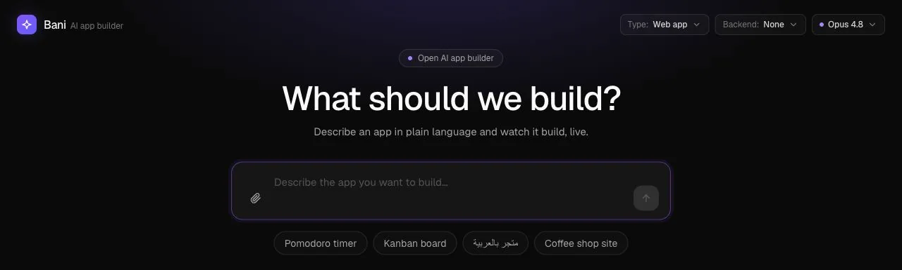
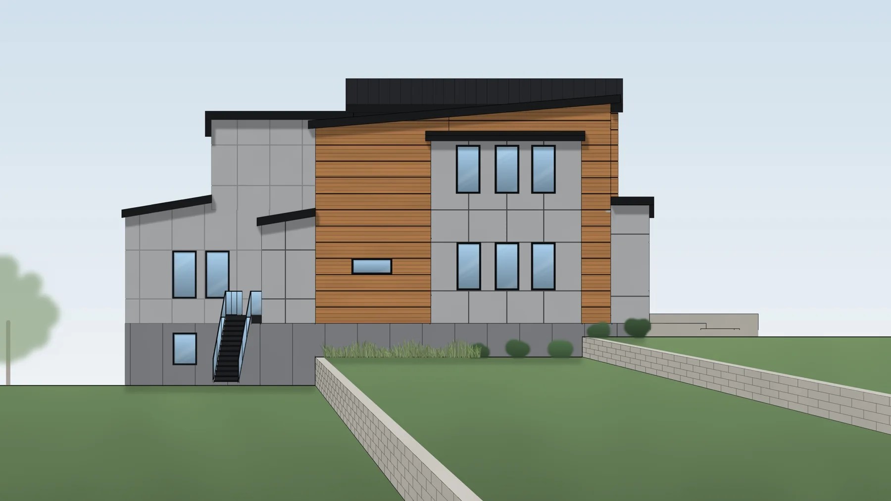
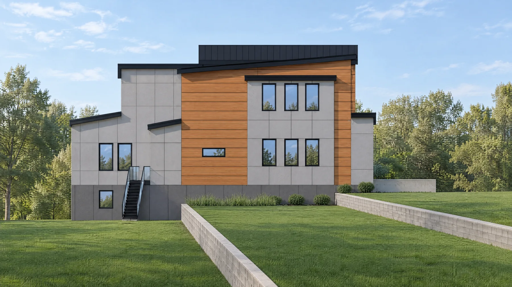

AI PRODUCT ENGINEER & CREATIVE BUILDER
COMPLEXIDEAS.REAL SOFTWARE.
I build the whole thing. The experience you see. The agents, workflows and systems that make it work.
↓Explore the workFROM FIRST IDEA TO THE HARD PARTSLOOKS GOOD.
GOES DEEPER.
Creative on the surface. Deliberate underneath. Here are five projects that show both sides of how I build.
Itlaqإطلاق
One workspace. Many models. Every generation accounted for.
Paid requests.
Uncertain outcomes.
A model provider can accept a paid request, then time out. I built credit reservations, durable jobs and reconciliation paths to handle that uncertainty without blindly paying twice.
Bani✧
An AI agent with tools, a real project runtime and a live preview.

The hard part is keeping model history, project files and the running app in sync—even when a turn fails.
plan2mock
Generate the vision. Check the geometry.


REFERENCERENDERBeautiful is not enough.
The windows still need to line up.
I built a Python pipeline from vector-PDF elevations to material drawings and optional AI renders, with alignment checks and local window diagnostics. A convincing image can still be structurally wrong.
ZAHMAزحمة
Make the work impossible to scroll past.
The idea. The assets.
The whole experience.
A bilingual landing experience combining cinematic scenes, interactive comparisons, creative campaigns and service demonstrations. Built with AI-assisted development and generated media.
Portfolio concepts for fictional businesses; not client performance claims.
ProcessFlow
Turning business documents into systems you can follow.
I GO FROM
“WHAT IF”
TO “IT WORKS.”
I like the difficult part: making the experience and everything behind it work together.
I use Claude Code and Codex deeply, from architecture and implementation to debugging and verification. I own the decisions, inspect the result and keep working when the first answer is wrong.
TypeScript / Python / React / Next.js / Node.js / FastAPI / PostgreSQL / SQLite / Supabase / Docker
Several products are pre-launch and source-private. Case studies show implementation details and the limits of the available evidence. Itlaq and Canvas House share some foundations.
See how I think.
GOT A HARD
PROBLEM?
Let’s build something worth showing. Open to AI product, applied AI and full-stack engineering roles.
manfo_6@yahoo.com ↗